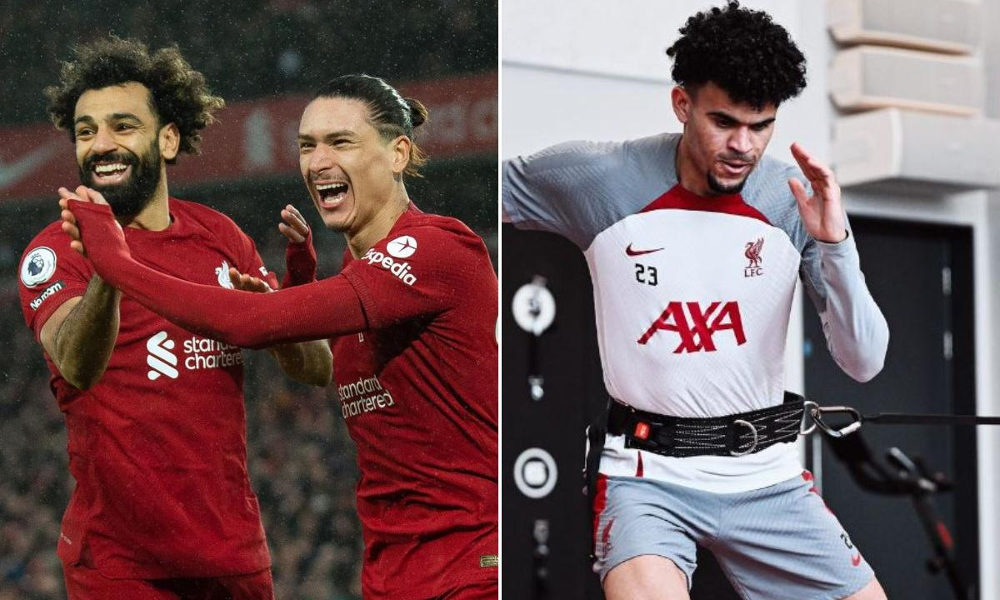

Deportes Tolima empató 0-0 este martes con el Sao Paulo por la tercera jornada del Grupo D
de la Copa Sudamericana, un duelo sin muchas emociones que supuso el debut del técnico
argentino Juan Cruz Real en el banquillo del conjunto colombiano.
Con este resultado en el estadio Manuel Murillo Toro de Ibagué, los brasileños se afianzan
en el liderato de la zona con siete puntos, seguidos del Vinotinto y Oro con cuatro. Tigre, que
aún no ha jugado en esta jornada, es tercero con tres unidades y el Academia Puerto Cabello es último sin puntos.
!Nacional gana en casa y asegura como lider del grupo¡
Deportes Tolima empató 0-0 este martes con el Sao Paulo por la tercera jornada del Grupo D
de la Copa
Sudamericana, un duelo sin muchas emociones que supuso el debut del técnico argentino Juan
Cruz Real en
el banquillo del conjunto colombiano
Con este resultado en el estadio Manuel Murillo Toro de Ibagué, los brasileños se afianzan
en el
liderato de la zona con siete puntos, seguidos del Vinotinto y Oro con cuatro. Tigre, que
aún no ha
jugado en esta jornada, es tercero con tres unidades y el Academia Puerto Cabello es último
sin puntos.
El Manchester de Guardiola a la seminfinal
Deportes Tolima empató 0-0 este martes con el Sao Paulo por la tercera jornada del Grupo D
de la Copa
Sudamericana, un duelo sin muchas emociones que supuso el debut del técnico argentino Juan
Cruz Real en
el banquillo del conjunto colombiano
Con este resultado en el estadio Manuel Murillo Toro de Ibagué, los brasileños se afianzan
en el
liderato de la zona con siete puntos, seguidos del Vinotinto y Oro con cuatro. Tigre, que
aún no ha
jugado en esta jornada, es tercero con tres unidades y el Academia Puerto Cabello es último
sin puntos.
El Inter ya tiene oponente nada mas que el ACMilan
Deportes Tolima empató 0-0 este martes con el Sao Paulo por la tercera jornada del Grupo D
de la Copa
Sudamericana, un duelo sin muchas emociones que supuso el debut del técnico argentino Juan
Cruz Real en
el banquillo del conjunto colombiano
Con este resultado en el estadio Manuel Murillo Toro de Ibagué, los brasileños se afianzan
en el
liderato de la zona con siete puntos, seguidos del Vinotinto y Oro con cuatro. Tigre, que
aún no ha
jugado en esta jornada, es tercero con tres unidades y el Academia Puerto Cabello es último
sin puntos.
El Inter ya tiene oponente nada mas que el ACMilan
Considerada como final anticipada de la Liga de Campeones, se presenta en formato eliminatoria con el
primero de dos apasionantes capítulos en un Santiago Bernabéu, donde aún resuenan los ecos de lo
imposible del último precedente, el pulso entre el gran dominador de la competición, el Real Madrid con
sus catorce 'orejonas', ante el favorito a tomar el testigo en el gran reto pendiente de Pep
Guardiola.
Una semifinal que pasó a la historia en la pasada edición, la undécima para el Real Madrid en las trece
últimas 'Champions'. Una década gloriosa. Campeón en cinco de los nueve últimos torneos del trofeo más
preciado.
No se pierda ningun dato acerca de este duelo de titanes y acceda a los siguientes links:
Liverpool vive su mejor momento en una temporada muy irregular. La victoria 7-0 en el clásico inglés
contra Manchester United le infló el pecho al equipo de Jürgen Klopp, quien manifestó que es una
"muestra" de lo que pueden hacer y abrió la ilusión para una remontada contra Real Madrid en la vuelta
por los octavos de la Champions League.
"No tengo palabras para esto", dijo Klopp después de doblegar al Manchester United con la mayor goleada
de su historia. "Ha sido un partido espectacular, fantástico. Hemos jugado un gran partido contra un
equipo que estaba muy en forma", añadió Klopp.Pero no solo esta noticia ilusiona a los aficionados de
Liverpool, pues el colombiano Luis Díaz, quien completa varios meses por fuera de las canchas por una
grave lesión en una de sus rodillas, está a puntode volver a jugar con los ‘reds’.

El regreso de Díaz sería vital para Liverpool, que parece enderezar su camino y lucha por escalar a
la cuarta posición de la Premier, lo que le daría un cupo para la próxima Champions.En esa competición,
la tarea es complicada tras caer 2-5 contra Real Madrid, pero Liverpool es un club que se aferra a las
grandes gestas, las cuales lo han hecho uno de los históricos del mundo.
Según el periodista Diego Rueda, Luis Díaz podría regresar a las canchas este sábado por la Liga Premier
en el partido contra Bournemouth. Además, dijo, podría tener minutos en el juego de Champions contra
Real Madrid, el cual se jugará el 15 de marzo.